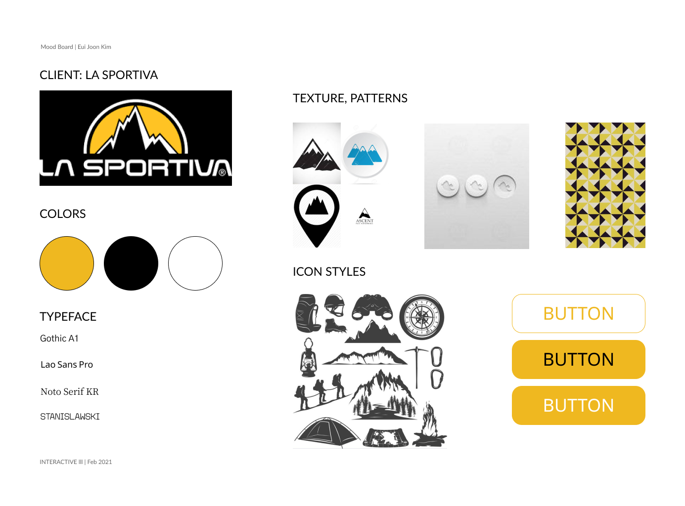
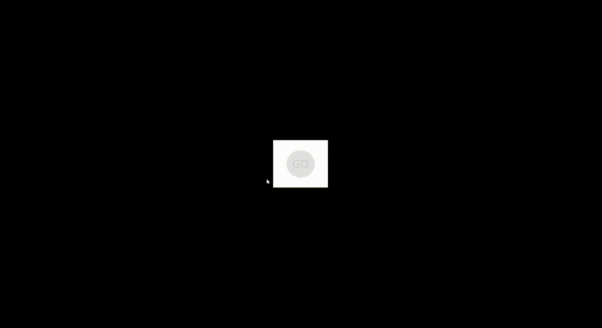
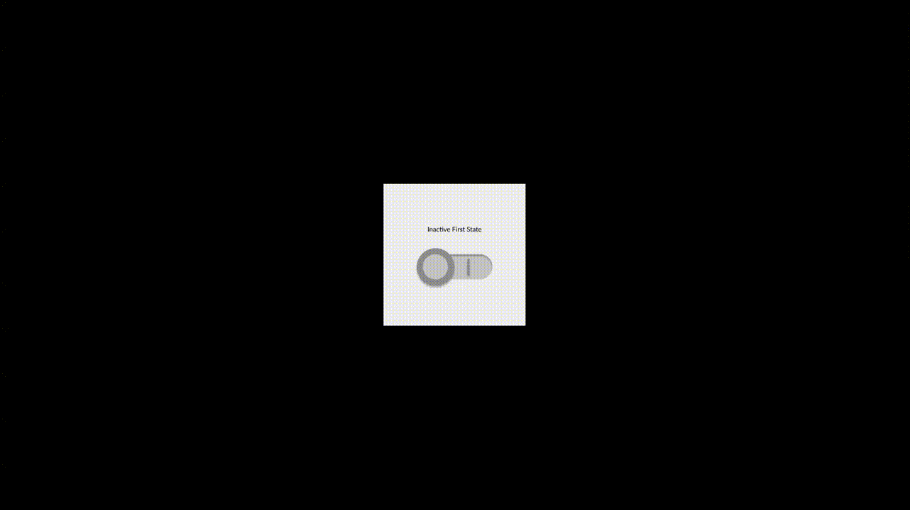
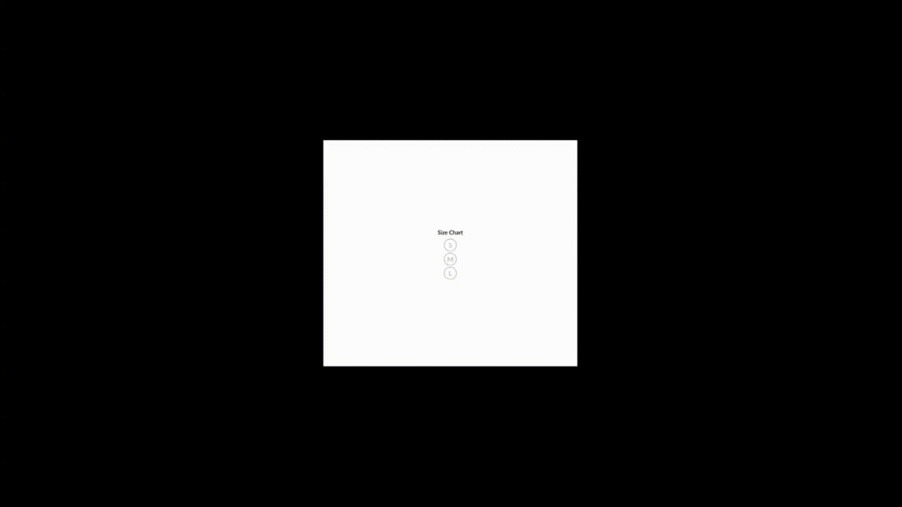
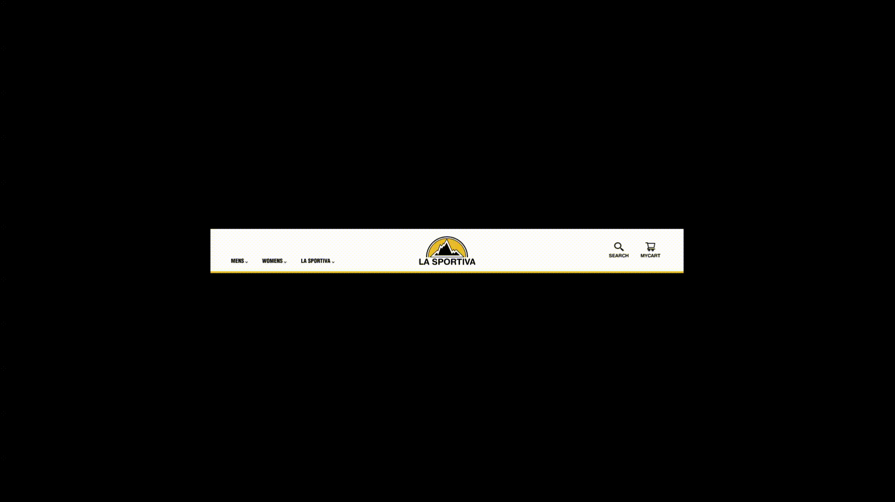
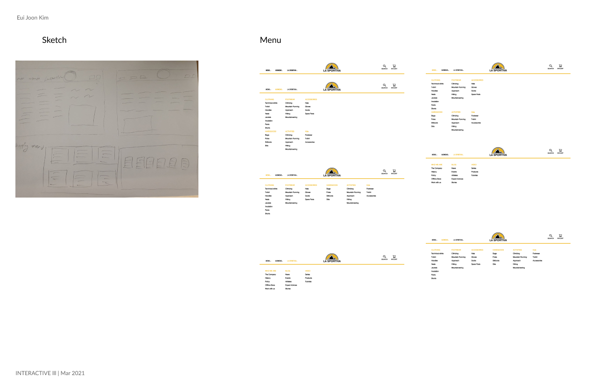
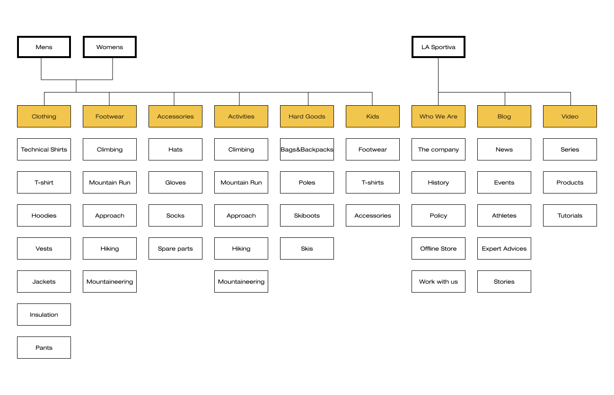
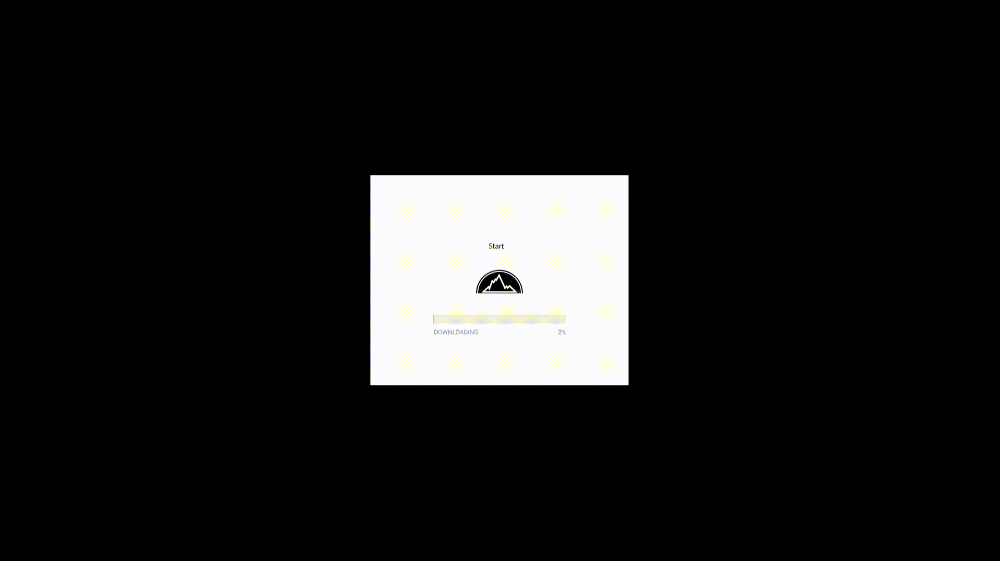

Button Dessign
Overview
The main purpose of the project is on developing creative and expressive micro-interactions.
The objective to is design interactions that go well beyond 'usable' to achieve 'delight'.
The interactions
•Basic & Embellished Buttons
•Toggleswitches & Sliders
•Radiobuttons & Checkboxes
•Menus & Selectors
•Wait Timers & Loading indicators
Requirements
•Clarity of purpose
•Discoverability and Affordance
•Status and Feedback
•Differentiated Functional States
•Suitable target size for mode of interaction
Moodboard
Basic Button
Toggleswitches


Radio Button


Menus
  Loading indicators
